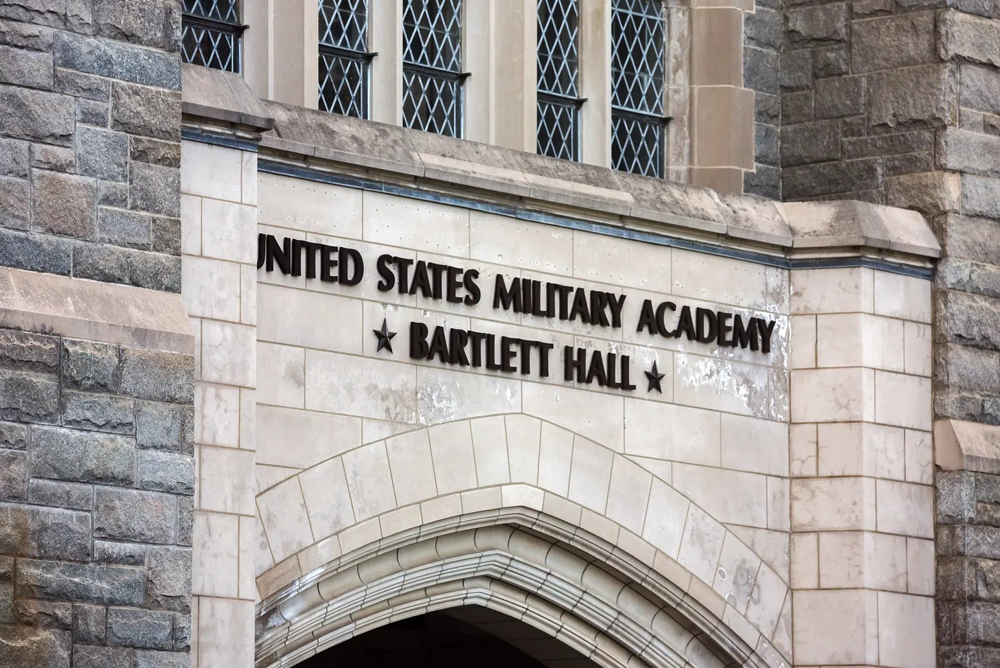
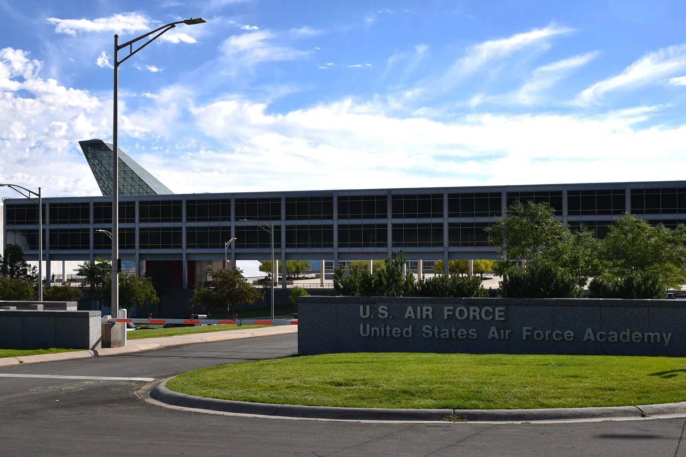
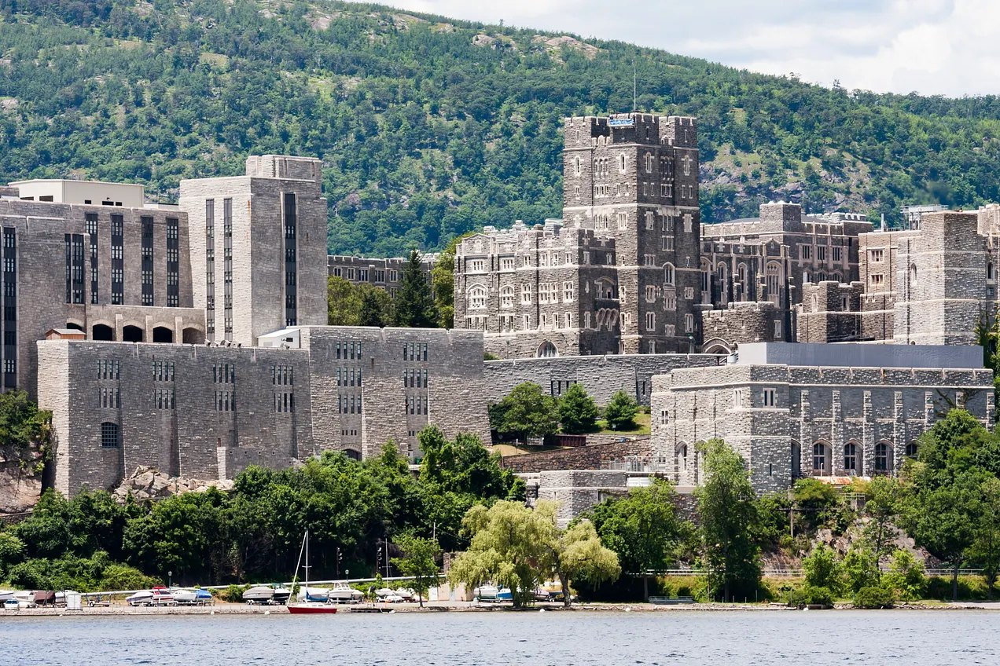

Elevation Change’s No. 7 Air Force Falcons travel to West Point, New York, to take on the Army Black Knights in a nationally televised affair that could secure the Falcons their 22nd Commander-in-Chief’s Trophy.
Air Force-Army will be the first non-power conference matchup to host FOX’s Big Noon Kickoff in 2026. It’s the first time since the 2023 Mountain West Championship that the national show will be at a G6 matchup, and the first time a G6 school will host the show during the regular season.

Army comes into the game 5-3 with a 4-2 record in American Conference play. The Black Knights bring the nation’s best rushing attack, averaging 342.5 yards per game, just 1.5 yards more than Air Force’s second-best rushing attack.
Seven different Black Knights have over 100 rushing yards on the season, with three players over 300. Quarterback Cale Hellums leads the way with 874 yards and 17 touchdowns through eight games this season. He also has 462 yards and four touchdowns through the air. Hellums is on track for a career season after rushing for 1,223 yards and 18 touchdowns last year, more than any other starting service school quarterback.
Air Force is playing its second straight non-conference game following its win against UConn last weekend. The Falcons’ win was their second this season in which they didn’t complete a pass. Fullback-turned-quarterback Kemper Hodges led the way with 200 yards and four touchdowns on the ground after quarterback Evan Medders was injured in the Falcons’ previous game against Wyoming.
Hodges has a chance of starting once again in the Falcons’ matchup against the Black Knights. Otherwise, freshman Howard Fisher IV may get the first start of his career with Medders out for the foreseeable future.

While Hellums has dominated the Army backfield, the Falcons have three players with over 390 rushing yards on the season due to continuing injuries at the quarterback position. Whichever school is able to put up more yards on the ground should be able to walk away with the victory.
The Air Force defense has been better against the run this season, allowing 129.1 yards on the ground versus the 152.4 given up by Army. Air Force has also been the more effective pass-rushing team with 12 sacks this season, led by defensive back Max Mustell’s three.

The Elevation Change model likes Army more than Air Force due to the long flight between Colorado and New York. Army is currently favored by 6.4 points, with a modest over/under of just 52.5.
This is the second edition of this year’s Commander-in-Chief’s Trophy round-robin, and it should produce stronger offensive results than Air Force’s 14-9 victory over Navy in early October.
Both teams are fairly evenly matched and should produce a great game, shown on national television ahead of Veterans Day. The key will be which rushing attack comes out on top, but we think Army will have just a bit more push, preventing the Falcons from securing their first Commander-in-Chief’s Trophy since 2022.
Prediction
- Army
- 29
- Air Force
- 23